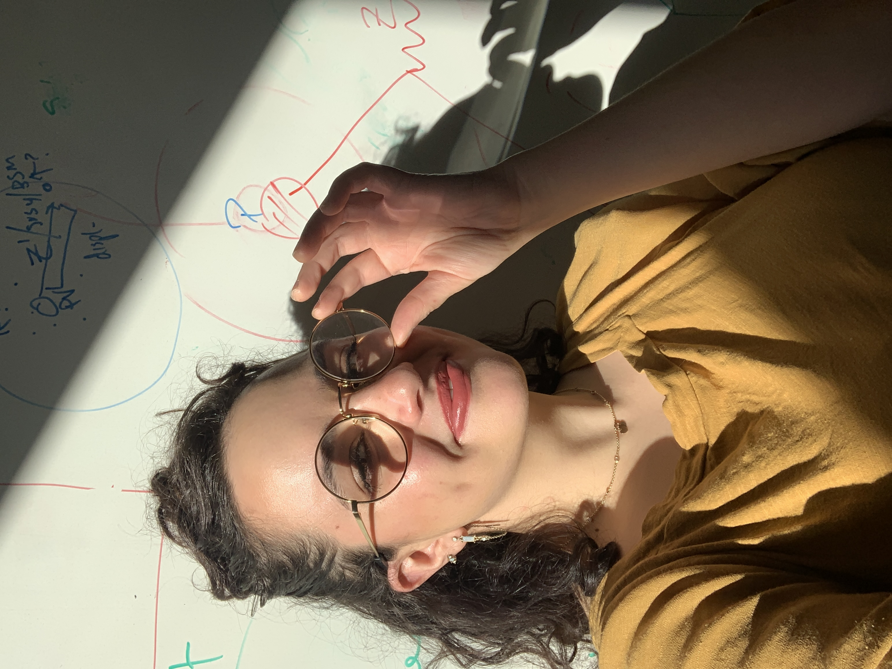
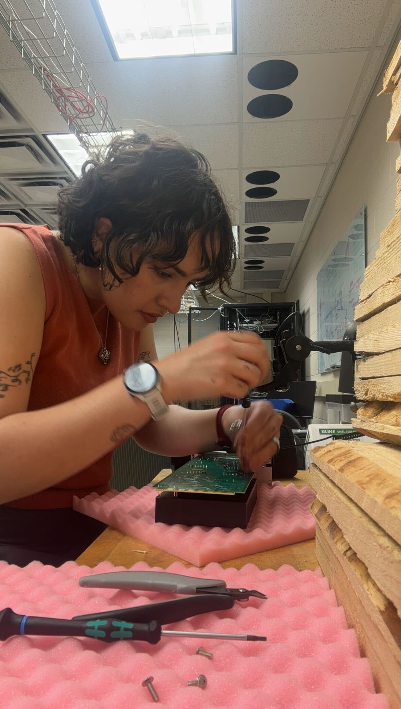
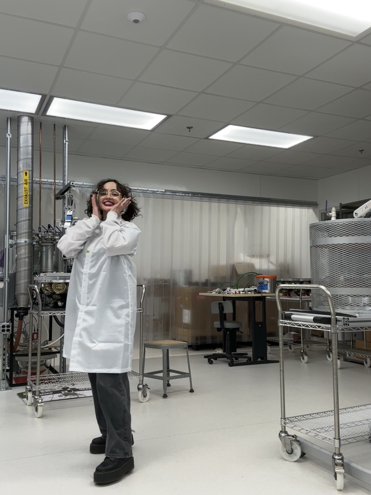

				<!-- Banner -->
					<section id="banner">
						<div class="inner">
							<h2>{{ site.title }}</h2>
							<p>{{ site.description | markdownify }}</p>
						</div>
						<a href="#one" class="more scrolly">Hey there!</a>
					</section>

				<!-- One -->
					<section id="one" class="wrapper style1 special">
						<div class="inner">
							<header class="major">
								<h2>I'm Victoria, welcome!</h2>
								<p>she/her<br /> 
								I wear a lot of hats.<br />
								Let's see what I can do for you.</p>
							</header>
						</div>
					</section>

				<!-- Two -->
					<section id="two" class="wrapper alt style2">
						<section class="spotlight">
							<div class="image"></div><div class="content">
								<h2>Expert in data analysis and machine learning </h2><br />
								<h3>with a focus on data and simulation in high-energy particle physics</h3>
							</div>
						</section>
						<section class="spotlight">
							<div class="image"></div><div class="content">
								<h2>Electronics communications test bed lab lead</h2><br />
								<h3>where sometimes sparks fly and in-depth investigations of points of failure occur</h3>
							</div>
						</section>
						<section class="spotlight">
							<div class="image"></div><div class="content">
								<h2>Detector device assembly commissioner</h2><br />
								<h3>for the IceCube Upgrade at MSU, involving assembly, freezer and optical acceptance testing of optical modules</h3>
							</div>
						</section>
					</section>

				<!-- CTA -->
					<section id="cta" class="wrapper style4">
						<div class="inner">
							<header>
								<h2>lost?</h2>
							</header>
							<ul class="actions vertical">
								<li><a href="#" class="button fit special">back to top</a></li>
							</ul>
						</div>
					</section>
